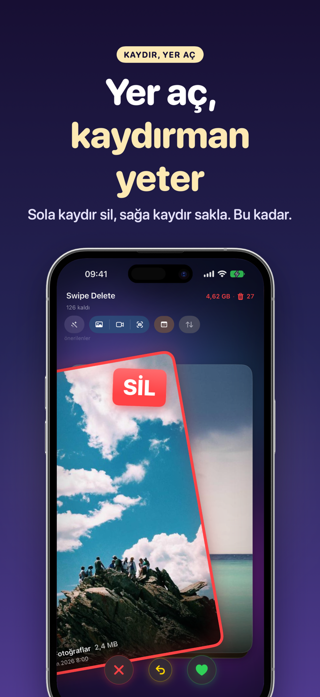
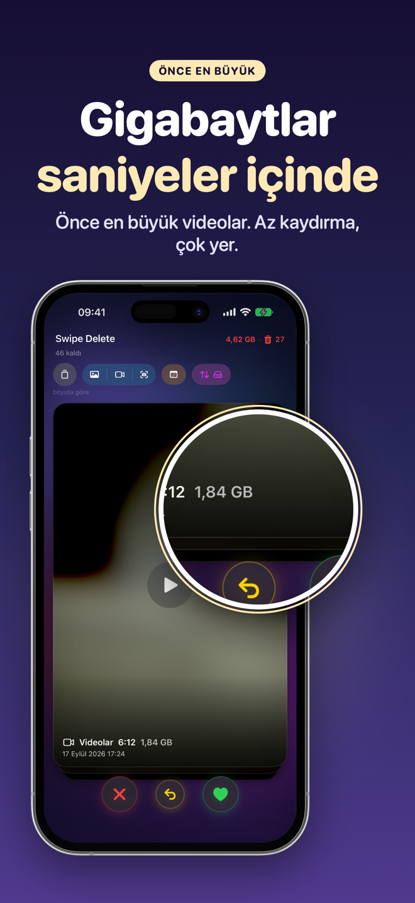
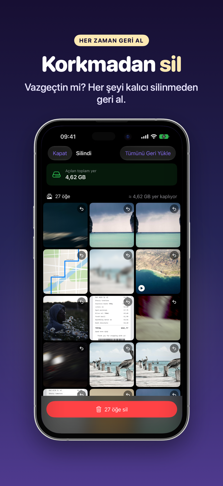
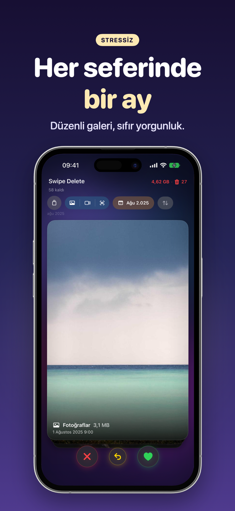
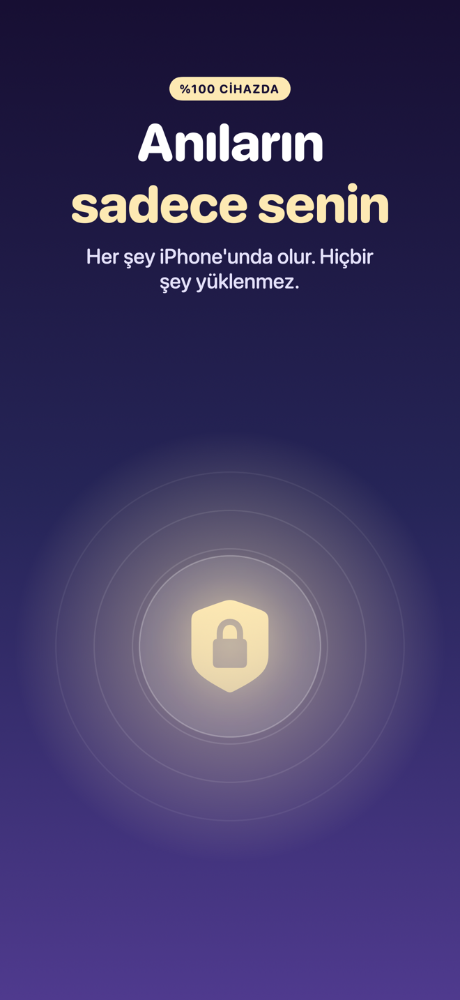
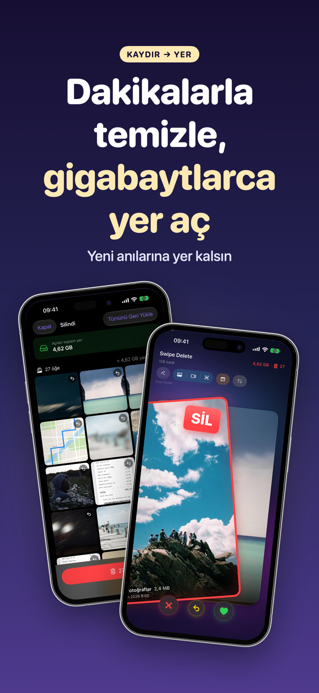
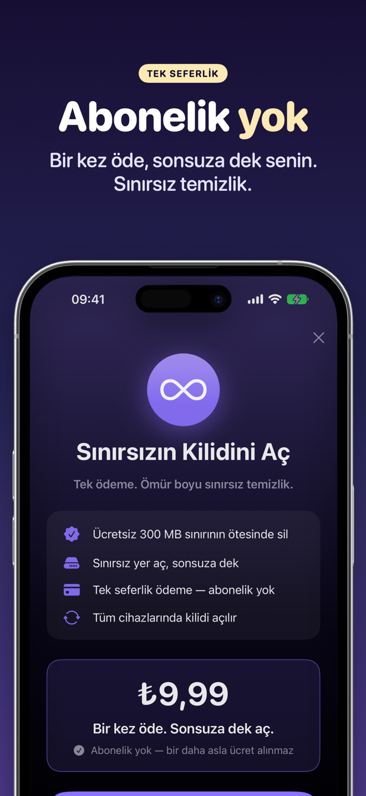

SwipeDelete · Fotoğraf Silme
Kaydırarak fotoğraf silme: galerini dakikalar içinde temizle
Telefon hafızası doldu uyarısından bıktın mı? Fotoğraf ve videoları kart gibi kaydır: sola kaydır, sil; sağa kaydır, sakla. Her karar bir saniye sürer.
Çok yakındaApp Store'daHer şey cihazında · Çöp kutusu güvencesi · Tek seferlik satın alma, abonelik yok

Galerini hafiflet, telefonuna nefes aldır
Albüm albüm gezmeden hızlı fotoğraf silme. Temizlik sıkıcı bir iş olmaktan çıkar, eğlenceli bir alışkanlığa dönüşür.
Çok yakındaApp Store'da- Akıllı önerilerEkran görüntüleri, benzer fotoğraflar, seri çekimler ve bulanık kareler önce.
- En büyük dosyalar önceEn az kaydırmayla en çok yer kazan.
- Çifte güvenlikUygulama içi çöp kutusu ve iOS onayı.
- Gizliliğin güvendeHiçbir veri buluta gönderilmez.
Oyun oynar gibi galeri temizleme
Şimdiye kadar kaç GB yer açtığını gösteren sayaç seni motive eder. Tüm ekranlar için kaydır →
Sola sil, sağa sakla 
Önce en büyük videolar 
İstediğin zaman geri yükle 
Ay ay temizlik 
Her şey cihazında 
Dakikalar içinde gigabaytlar 
Tek seferlik satın alma
Nasıl çalışır
Dört adım, hepsi bu.
Fotoğraflar erişimine izin ver
SwipeDelete'i aç ve arşivine erişim izni ver. Analiz iPhone'unda kalır.
Nereden başlayacağını seç
Akıllı öneriler; fotoğraf, video veya ekran görüntüsü; yıl ve ay filtreleri ya da boyuta göre sıralama.
Kaydır
Sola sil, sağa sakla. Yanlış mı oldu? Tek dokunuşla geri al.
Gözden geçir ve onayla
Çöp kutusunu kontrol et, istediklerini geri yükle ve silmeyi onayla.
Yer açma rehberleri
Pratik rehberler, şimdilik İngilizce.
iPhone'da yer açma
İngilizce rehber.
Oku (EN) →Yinelenen fotoğrafları silme
İngilizce rehber.
Oku (EN) →Ekran görüntüsü silme
İngilizce rehber.
Oku (EN) →Bulanık fotoğrafları silme
İngilizce rehber.
Oku (EN) →Büyük videoları bulma
İngilizce rehber.
Oku (EN) →Galeri temizleme
İngilizce rehber.
Oku (EN) →Toplu fotoğraf silme
İngilizce rehber.
Oku (EN) →Seri çekimleri silme
İngilizce rehber.
Oku (EN) →Sık sorulan sorular
iPhone'da çok sayıda fotoğraf hızlıca nasıl silinir?
SwipeDelete'te fotoğraf ve videoları kart gibi kaydırırsın: sola kaydır, sil; sağa kaydır, sakla. Yanlış mı kaydırdın? Son kararı tek dokunuşla geri al. Daha fazla bilgi (EN)
Yanlışlıkla sildiğim fotoğrafı geri alabilir miyim?
Evet. Sola kaydırdığın içerikler önce uygulama içi çöp kutusunda bekler; tek tek geri yükleyebilir ya da tek dokunuşla hepsini boşaltabilirsin. Kalıcı silmeden önce iOS da onay ister. Daha fazla bilgi (EN)
Benzer fotoğrafları ve ekran görüntülerini nasıl silerim?
Akıllı öneriler ekran görüntülerini, benzer ve yinelenen fotoğrafları, seri çekimlerden kalan kareleri ve bulanık fotoğrafları en öne getirir. Daha fazla bilgi (EN)
En az kaydırmayla en çok yer nasıl açılır?
Boyuta göre sırala: en büyük dosyalar önce gelir, böylece en az kaydırmayla en çok yer kazanırsın. Daha fazla bilgi (EN)
Fotoğraflarım buluta yükleniyor mu?
Hayır. Tüm işlemler yalnızca cihazında yapılır, hiçbir veri buluta gönderilmez. Gizlilik politikası (EN)
Abonelik gerekiyor mu?
Hayır. 300 MB'a kadar ücretsiz yer açabilirsin; sınırsız kullanım için tek seferlik satın alma yeterli ve tüm Apple cihazlarında geçerli. Kullanım koşulları (EN)
İlk kartı kaydırmaya hazır mısın?
SwipeDelete çok yakında App Store'da.
Çok yakındaApp Store'da